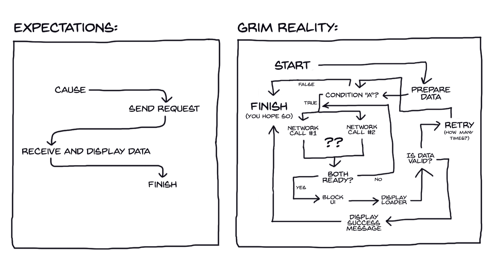
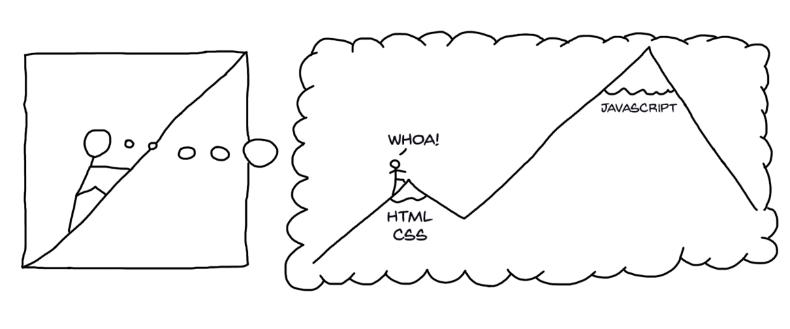
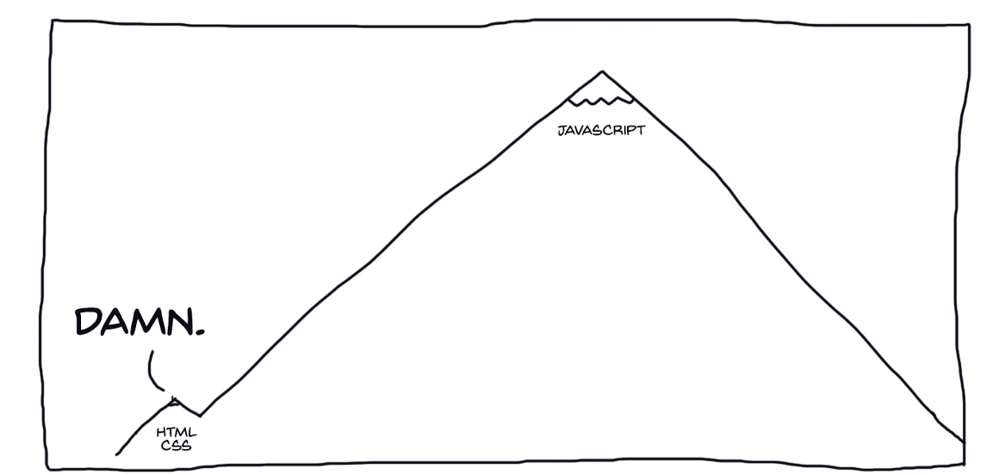
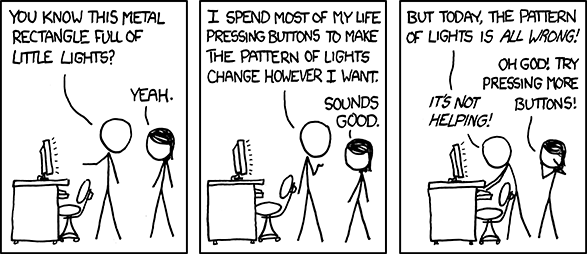
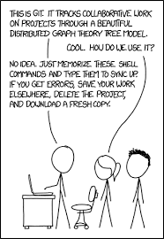
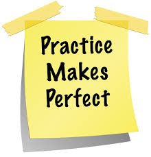
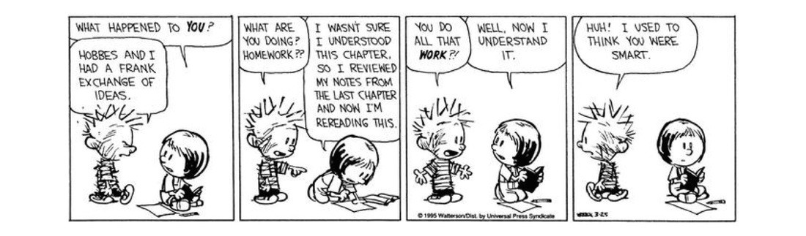

Building Blocks of Coding
-
The Beginner's Guide to Tech Careers
Created by Laurence Bradford, creator of Learn to Code With Me, to explain some of the Tech Careers that might interest you
Easy to follow breakdown on what careers are out there for "coders", I found it a good place to start.
Web Architecture 101The basic architecture concepts to help to have a high level understand how websites are built.
Good overall view of how the web works
Basic Programming Concepts BlogSimple blog about popular programming languages and thinks to know about them.
Easy to follow blog on programming, what it is and where to start.
Programming 101The 5 Basic Concepts of any Programming Language.
Quick read and example of five important concepts: Variables, Control Structures, Data Structures, Syntax, and "Tools".
Programming 101The 5 Basic Concepts of any Programming Language.
Quick read and example of five important concepts: Variables, Control Structures, Data Structures, Syntax, and "Tools".
itnext.io BlogHow to understand asynchronous JS code in a less painful way.
This is about JavaScript, learning the basics, but also gives you an idea about the complexities of this fundamental program.
"It starts like this..."
"…and end up in this. And it’s not the end!" (HuberZub img)

Learning Pathway Training Programs
-
Team Treehouse: Web Design Track
This site will lead you through a series of Courses and Workshops so you can efficiently master the skills you need to achieve your goals.
Team Treehouse is a great way to introduce yourself to the coding environment. Code Louisville uses this site as the platform to train all students new to coding.
MVA - Learning PathwaysCourses by Microsoft Virtual Academy (MVA) to help you increase your proficiency in programming. Build valuable skills through video tutorials, demos, assessments, and more. Plus, earn MVA badges for completed learning paths, and share them through email or social media, such as LinkedIn, Twitter, and Facebook.
I used this as a followup to what I learned in Team Treehouse in code Louisville. It's good to several resource to master different programs like HTML, CSS, JavaScript etc.
AWS EducateAWS Educate is Amazon’s global initiative to provide students and educators with the resources needed to accelerate cloud-related learning.
AWS (Amazon Web Service) Educate provides a portfolio, career pathways and badges on their different programs. I'd recommend this to anyone that may have any interest in working for AWS or a company that needs people that understand AWS sytems.
AWS Resource CenterFrom core concepts to beginner tutorials, find the information you need to start building on Amazon Web Services (AWS)
I'm not going to lie, this is a difficult site to navigate but its what you have to use if you want to learn AWS systems and possible earn a cerification from AWS
Trailhead: Salesforce TrainingIf you've ever wished for an easier way to learn about Salesforce, take a look at Trailhead. Trailhead provides developers and administrators a guided, learning path through the key features of Salesforce, using a set of interactive, online tutorials.
I should also reference Salesforce for developers to learn how to create and scale apps from Salesforce.I'm not going to lie, this is a difficult site to navigate but its what you have to use if you want to learn AWS systems and possible earn a cerification from AWS
Git and Github Training
-
First Timers Only
Friendly Open Source Projects should reserve specific issues for newbies.
This site helped me understand the concepts of "open source" and "contribute" specifically meant for Code Newbies.
-
Getting Git Right
Atlassian Git Tutorials for a visual introduction to Git commands and workflows, including examples.
Also a good source for Code Newbies interested in learning about open version control systems and how to contribute
-
Basic Git Commands
List of some basic Git commands to get you going with Git.
Good reference on how to handle git navigation until it becomes second nature.
-
Basic Git Commands
List of some basic Git commands to get you going with Git.
Good reference on how to handle git navigation until it becomes second nature.
-
Oh Shit, git!
The name pretty much sums it up... Examples of some bad situations you can find yourself in with git, and how to get yourself out.
This this woman thinks...and talks like me... enough said! I also think I'll use her site CSS format for some of this site...
-
How to Contribute to Open Source
Want to contribute to open source? A guide to making open source contributions, for first-timers and for veterans.
If you don't know what the "open source concept" is, this is a good place to start.
-
Learn Enough Git to Be Dangerous
Learn Enough Git to Be Dangerous is the final installment in a trilogy of tutorials on developer fundamentals designed to teach three skills essential for software developers and those who work with them. Its only prerequisites are the first two tutorials in the trilogy, Learn Enough Command Line to Be Dangerous (covering the Unix command line) and Learn Enough Text Editor to Be Dangerous (covering text editors). This tutorial covers a third essential skill: version control.
If you're a TRUE newbie coder, this is a good starting point. Also great as a refresher on GitHub and basic computer navigation skills that hangs everyone up at some point.
-
GitHub Learning Lab
This repository contains the completely open source on-demand training. These materials are provided under a Creative Commons License license.
This take you through a series of "fun" and practical projects, sharing helpful feedback along the way. It's straight from Github so worth looking into.
-
Learn Git Branching
This site is the most visual and interactive way to learn Git on the web; you'll be challenged with exciting levels, given step-by-step demonstrations of powerful features, and maybe even have a bit of fun along the way.
Git and Github is an essential part of coding, use every source you can find to help understand it. This site is easy to understand.
-
HackerRank
A technology hiring platform that is the standard for assessing developer skills for over 1,000 companies around the world.
Good resource to actually start practice algorithms and various concepts. Many companies use this platform for testing in the interview process. It is nice because it has "tracks" that allow you to hone and develop skills around various core CS concepts. I like the interface and the ability to focus the challenges on specific skill sets. (Ross Davis)
-
codeAcademy
Great interactive online learning resource for most of the major languages in modern software.
Great interactive online learning resource for most of the major languages in modern software.
-
w3schools.com
Staight forward tutorials, references and examples to help people learn CS languages for buidling web pages and other programs.
Easy to use reference on all types of subjet matter. Its best used when you have a specific question on types of programs.
-
Codepen
Write HTML, CSS, and JavaScript and get a real-time preview.
This is regularly used in the world of programming, you should become familiar with this ASAP.
-
Code Wars
A fun "Game-ified" code challenge website, also the base of another platform that companies are starting to use for interview testing, good to be familiar with.
For all you "Gamers", a more entertaining way to learn coding!
Calvin & Hobbes thoughts on practicing